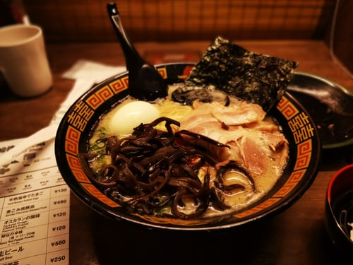

내가 좋아하는 일본요리
- 초밥(寿司)
- 규동(牛丼)
- 라멘(ラーメン)
라멘(ラーメン)

라멘(일본어: ラーメン)은 면과 국물로 이뤄진 일본의 대중 음식이다. 납면을 이용한 중국의 국수 요리인 라몐을 기원으로 한 면요리로서 면과 국물, 그 위에 돼지고기(챠슈), 파, 삶은 달걀 등의 여러 토핑을 얹는데, 지역이나 점포에 따라 다양한 종류가 있다. 일본에는 국민 음식이라 할 만큼 인기가 있으며, 일본 외에도 지명도가 높은 일식이다. 일본에서는 중국 요리로 분류하기도 한다.
'지나소바(支那そば)', '주카소바(中華そば)' 또는 '남경(南京)소바'라고 불리다가, 1958년에 사업가 안도 모모후쿠(安藤百福)가 개발한 인스턴트 라멘인 '닛신(日淸) 치킨 라멘'이 일본 전역에서 인기를 끌면서 '라멘'이라는 이름이 대중적으로 정착되었다.[4] 대개는 가타가나로 'ラーメン'이라고 표기하는 것이 보통이다. 일반적으로 일본식 된장으로 맛을 낸 '미소 라멘', 간장으로 맛을 낸 '쇼유 라멘', 소금으로 맛을 낸 '시오 라멘', 돼지뼈로 맛을 낸 '돈코츠 라멘(豚骨ラーメン)' 등이 대표적이다.